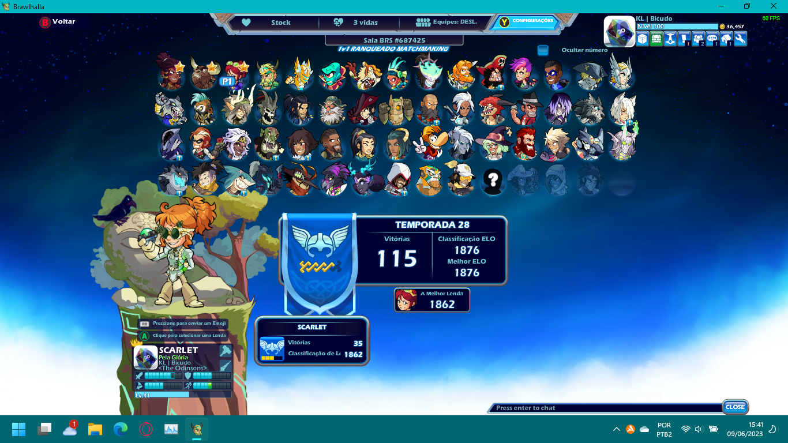

Quem é?

Thalys "Bicudo" Caires é um rapaz de 19 anos que é fissurado em tecnologia, ciências e histórias.
Natural de Teixeira de Freitas, é um orgulhoso bahiano que, embora sem muitos motivos, adora sua cidade e espera ansioso pelo dia em que ela será super bacanuda.
O que faz?

Ele joga Brawlhalla num nível casual, embora ame competir e ver os campeonatos.
Investe bastante tempo criando histórias e vez ou outra conta um pouquinho delas numa mesa de Breu ou D&D.
Como notado, também gosta de estudar programação.
Em pouco tempo irá começar a faculdade de licenciatura em matemática e pretende dar aulas.
O que pretende ser?

Ele pretende ser algo. No passado, sonhava com ser alguém importante e em poder mudar o Mundo, mas agora ele só quer ter o seu próprio lugar, fazendo o que gosta e sendo feliz. Além disso, gostaria de poder ajudar as pessoas ao seu redor da forma como for possível.